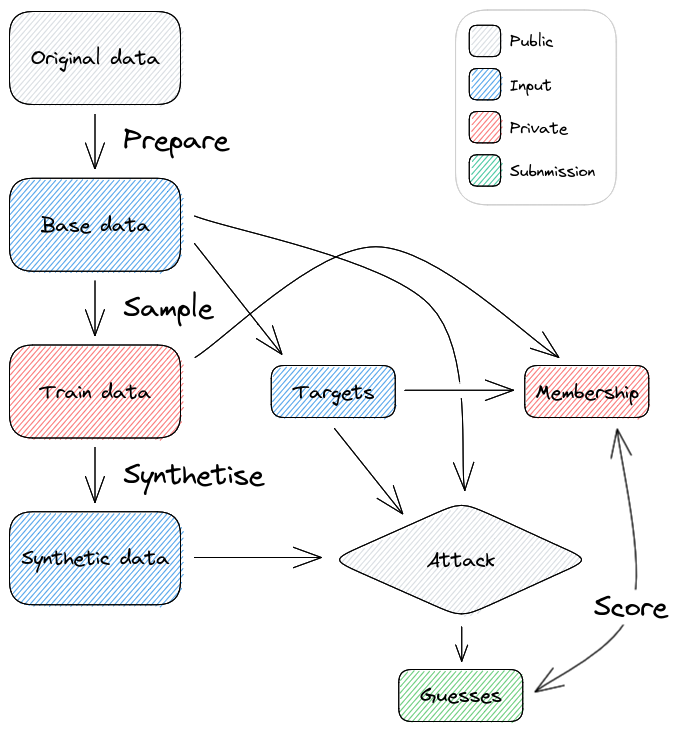

The Snake challenge: Sanitization algorithms under attack
| Tristan Allard1, Louis Béziaud1,2 and Sébastien Gambs2 |
|   |
| 1Univ Rennes, CNRS, IRISA |
| 2Université du Québéc à Montréal |
| {tristan.allard,louis.beziaud}@irisa.fr, gambs.sebastien@uqam.ca |
| Authors appear in alphabetical order |
May 26, 2023
Competitions and challenges have proven to be useful tools in the fields of security, cryptography or machine learning for stimulating research as well as generating and testing open-source implementations of state-of-the-art methods. While there were already some privacy challenges organized in the domain of data sanitization (also called data anonymization or privacy-preserving data publishing), they have mainly focused on the protection aspect. In this paper, we propose the Snake challenges, a series of contests dedicated to the design of privacy attacks against data sanitization schemes. The conception of the Snake challenges is such that they allow participants to concentrate their attacking efforts over a small set of well-chosen sanitization schemes. In addition, the proposed structure for the challenge is generic in the sense that the details of the contest can easily be instantiated at each edition (e.g., type of attack, dataset used and background knowledge of the adversary). In this first edition, we propose to focus on membership inference attacks over a set of well-known differentially-private synthetic data generation schemes. More precisely, the design of the first edition includes an instantiation of the generic structure, a dataset derived from the Census data, an evaluation of the success of each attack algorithm against varying targets and background knowledge, and the technical environment for supporting the contest. This paper describes our proposal and positions it with respect to previous privacy challenges.
Competitions and challenges are commonly used both in the machine learning community – for boosting the design and development of practical and efficient solutions to hard or new problems – and in the security community – for training purposes or for the evaluation of existing infrastructures. In contrast, in the privacy community, there is not a long tradition of holding such challenges. However, in recent years several competitions focusing on data sanitization algorithms (also called data anonymization algorithms or privacy-preserving data publishing algorithms) have been launched [ 2, 8, 11, 13].
Some of them, like the 2018 Differential Privacy NIST Challenge [13], have focused primarily on the defense aspect. More precisely, their main requirements were that the proposed algorithms have to (1) meet formal guarantees such as differential privacy, (2) achieve high utility levels on real-life cases, and (3) are efficient enough for being run on today’s off-the-shelf computer systems. Others, like the Hide-and-Seek challenge [8], the INSAnonym competition [2] or the PWSCUP1  [11] additionally consider attacks on the sanitized datasets generated by the participants. More precisely, these competitions were generally composed of two phases, in which the first one is dedicated to the design of sanitization algorithms (usually focus on a particular type of data and use case) while the second one usually consists in attacking the data sanitized with the algorithms developed during the first phase.
While the sanitization phases of past challenges have been successful, in the sense that it has provided insights on the privacy/utility trade-offs, lead to implementations from state-of-the-art sanitization algorithms or even novel algorithms, the outcomes of the attack phases were usually more mitigated. For example, the organizers of the Hide-and-Seek challenge have reported attack results equivalent to random guesses [ 8]. We believe that one of the main reason for this is that in order to be successful, the attack phase must allow participants (1) to dedicate sufficient time to the design, implementation and testing of their attack strategies and (2) to focus on a few algorithms.
In this paper, we propose a series of privacy challenges called Snake specifically tailored to attacks against sanitization algorithms. More precisely, the general structure of the Snake challenge provides the following salient features: it (1) concentrates the energy and expertise of participants against a small set of carefully chosen state-of-the-art sanitization algorithms, (2) gives sufficient time to participants to design and test carefully their attacks, (3) enables the exploration of a wide range of possible adversary models and background knowledge and (4) complements nicely the current sanitization competitions that focus on the sanitization part, thus resulting in a complete defense-attack pipeline. The first edition of the challenge focuses on the Membership Inference Attack setting [ 5, 14] over tabular data synthetically generated while satisfying differential privacy [ 3]. The adversarial background knowledge consists in the record(s) of the target(s) of the attack. Further editions will showcase other inference attacks, adversarial background knowledge, privacy models and sanitization algorithms.
The outline of this report is as follows. First in Section 2 , we describe the generic structure of the Snake challenges. Then in Section 3 , we instantiate it by providing the details of the first edition. Afterwards, we position the Snake challenges in Section 4 with respect to previous sanitization competitions before concluding in Section 5 .
Number of tracks
The number of independent tracks of the edition being designed.
Track
A track is defined by a time period, a set of sanitization algorithms, a base dataset and a set of teams.
Team
A set of individuals collaborating together under the same name and registered to one or more tracks.
Time period
For each track, the time period over which the track runs.
Base dataset
For each track, the full dataset input by the sanitization algorithms (partially or totally).
Sanitization algorithms
For each track, the set of sanitization algorithms attacked.
Attack goal
The objective of the attack (e.g., membership inference, reconstruction attack or attribute inference).
Success measure
For each track, the measure used for computing the score of each team.
Basically, an edition of the Snake series of challenges consists in a set of independent tracks. Each of these tracks focuses on a set of sanitization algorithms under attack. Each of this track also relies on a base dataset from which private datasets are extracted. In addition, a set of competing teams registers to a track and afterwards are ranked based on a success measure on the subset of algorithms they attack. The success measure typically reflects the strength of the attack. The time period for conducting a track must be long enough for letting each team explore, design and implement at least one attack.
The instantiation of the above framework (e.g., number of tracks, details of the success measure, algorithms under attack–see Table 1 ) might vary along tracks and editions, allowing to implement it over a diversity of settings. For a concrete illustration, we detail afterwards the design of the first edition in Section 3 .
Table 2 summarizes the parameters of Snake 1 while Figure 1 gives an overview of the complete workflow.
Tracks
Team
To be defined at runtime.
Base dataset
The CPS (Current Population Survey) data projected over a subset of dimensions (tabular data). Each execution of a sanitization algorithm takes as input a private dataset consisting of random samples from the base dataset.
Targets
Each target consists in the set of records of a random household containing at least 5 individuals2 .
Sanitization algorithms
Attack goal
Membership inference.
Success measure
For each team, number of combinations of competition parameters (sanitization algorithm, privacy parameter) on which the given team obtains the best membership advantage [ 15].

Structure. The first edition of the Snake challenge, called Snake1 below, is organized jointly with APVP’233 . More precisely, the competition starts end of May and terminates end of August, with an early feedback and a discussion session during APVP’23 in mid-june. Remote participation will also be possible.
Expected outcomes. To favor both the reproducibility and the accountability of the results of Snake 1, (1) the description of the attacks designed along Snake 1 and their code will be published online under an open-source license (i.e., approved by the Open Source Initiative4 ), and (2) complete information about Snake 1 settings (i.e., teams and scores) will also be made public. The choice of the exact open source license of each attack source code is left to the team having written the code.
Attack algorithm. Snake 1 focuses on membership inference attacks on differentially-private synthetic data generation algorithms. More precisely, each team has to design an attack algorithm as follows.
Input
We provide to the attack algorithms the following information:
Output
The output of the attack algorithm is a single real ∈ [0,1] indicating the predicted probability of each target being within the private dataset or not.
We detail below the computation of the private datasets and of the targets, the sanitization algorithms under attack and the success metric of attacks.
Base dataset and private datasets. Snake 1 makes use of the publicly available EPI CPS Basic Monthly data provided by the Economic Policy Institute [ 6]. The CPS dataset is divided in years in which a yearly dataset contains more than 106 records and 125 columns5 . A record contains information about a single individual in a household. However, several individuals from the same household can be pooled and in addition any household can join the CPS at any given month and is interviewed (1) during 4 consecutive months for the given year, and (2) the same 4 consecutive months during the following year.
Our base dataset is built as follows. We concatenate the years 2005 to 20227 . For each household, we keep only the month8 in which it possesses the most records (i.e., individuals). We end up with each household being unique by year and month. Afterwards, we drop all rows that have at least one missing value. This results in a dataset that includes 77111 households and 201279 rows (i.e., individuals). Finally, we project the dataset on 15 attributes (see Table 3 ), which results in what is called the base dataset.
| age | agechild | citistat | female | married | ownchild | wbhaom | gradeatn | cow1 | ftptstat | statefips | hoursut | faminc | mind16 | mocc10 | |
| Numerical | X | X | X | ||||||||||||
| Ordinal | X | X | X | X | X | ||||||||||
| Unique | 65 | 16 | 5 | 2 | 2 | 12 | 6 | 16 | 8 | 9 | 51 | 129 | 15 | 16 | 10 |
| Range | [16,80] | [0,11] | [0,198] |
From this base dataset, we generate one private dataset for each parameterized sanitization algorithm attacked. More precisely, each private dataset is obtained by combining a random subset of targets (i.e., the members) with 104 individuals sampled uniformly at random from the base data.
Targets and background knowledge. In Snake 1, any household that contains at least 5 individuals might be a target, with the target consisting of the full set of records of the household. The set of targets given to a team for launching its membership inference attack on a given sanitization algorithm are extracted from the corresponding private dataset.
Snake 1 considers the following background knowledge about each target. The adversary knows (1) the exact records of the household targeted, and (2) the full base dataset9 . Additionally, following Kerckhoffs’s principle, the adversary is also given the information about the sanitization algorithm targeted as well as the parameters used for the executions and has access to its implementation. However, the randomness generated internally during the execution of the algorithm is unknown to the adversary (e.g., for the generation of the Laplace noise).
Sanitization algorithms under attacks. The sanitization algorithms under attack during Snake 1 are differentially-private synthetic data generation algorithms. More precisely, we have selected a set of algorithms according to the following two criteria: technical soundness assessed by a rigorous peer-selection process (e.g., published at top-tier conferences or winner of a dedicated competition) and available open-source implementation. In particular, we have used the implementation available in the reprosyn package10 . Except for parameters related to differential privacy, we use the default values set in their implementations.
The PrivBayes algorithm [ 16]
generates synthetic data by capturing the underlying distribution of the private data through a specific Bayesian network while satisfying ùúñ-differential privacy. PrivBayes is divided in two main steps, with half of the privacy budget being used for each step. First, it greedily constructs a low-degree Bayesian network by selecting the child/parents pairs maximizing the mutual information based on the Exponential mechanism[ 3]. Second, it computes the conditional distributions of the resulting network, perturbed by the Laplace mechanism. The synthetic data is finally generated by sampling iteratively from the conditional distributions, which is a form of post-processing preserving the differential privacy guarantees.
The MST algorithm [ 9]
is a generalization of the NIST-MST algorithm, which has won the 2018 NIST Differential Privacy Synthetic Data challenge11 . It generates synthetic data by perturbing the marginals that capture the data distribution through the Gaussian mechanism and by post-processing them through the Private-PGM algorithm¬†[ 10]. The base marginals can be obtained by one of the three following methods: given by a domain expert, computed from a public dataset that follows a data distribution similar to the private dataset‚Äôs distribution or computed from the private dataset while satisfying differential privacy. Afterwards, Private-PGM takes as input the perturbed marginals and computes a data distribution that would have produced close marginals. More precisely, it represents the problem as an optimization problem, the distribution searched as a graphical model, and thus solves the problem of finding the optimal graphical model. Synthetic data can then be generated based on the model found. The MST algorithm has been demonstrated to satisfy (ùúñ,Œ¥)-differential privacy.
The PATE-GAN algorithm [ 7]
is an extension of generative adversarial networks¬†[ 4] (GAN) based on the private aggregation of teacher ensembles framework¬†[ 12] (PATE). Each PATE-GAN iteration consists in three phases. First, PATE-GAN trains k classifiers (called teachers) for distinguishing private real data from generated synthetic data. Each teacher is fed with samples from the real dataset (one partition per teacher) and from a generator (uniform distribution at first) and learns to distinguish between the two. Second, PATE-GAN builds on the k teachers for training the student (a binary classifier as well) and the generator in an adversarial manner. The generator produces a set of samples but the teachers are now used for voting, for each sample, whether it is realistic or fake. The number of votes for each label (realistic or fake) is perturbed by the Laplace mechanism and the final label of a sample is the majority label. The student learns to distinguish between real and fake samples based on the resulting dataset. Third, the generator outputs a final set of samples and is penalized according to the success of the student in distinguishing realistic samples from fake samples. PATE-GAN iterates until the privacy budget is exhausted. This method has been shown to satisfy (ùúñ,Œ¥)-differential privacy.
Success measure. The success of a team is computed by first measuring the successes of its attack on each parameterized algorithm attacked (e.g., MST parameterized by (ùúñ = 1.0, Œ¥ = 10−5)) and second by aggregating the success measures in a single final score. More precisely, the success of a given attack for a given triple is evaluated based on the well-known membership advantage measure¬†[ 15] (see Definition¬†3.2.0.0 ). Membership advantage is computed for each attack through the execution of a membership experiment (see Experiment¬†3.2.0.0 ). A single membership experiment requires to estimate the success probabilities of the attack and consequently to run the same attack r times. The parameter r must be at the same time large enough for obtaining a sufficiently stable estimation and small enough for being practical (e.g., r = 100).
Experiment (Membership experiment ExpM(ùíú,A,n,ùíü), from¬†[15]). Let ùíú be an adversary, A be a learning algorithm, n be a positive integer, and ùíü be a distribution over data points (x,y). The membership experiment proceeds as follows:
Definition (Membership advantage, from¬†[ 15]). The membership advantage of ùíú is defined as
|
|
in which the probabilities are taken over the coin flips of ùíú, the random choices of S and b, and the random data point z ‚ຠS or z¬† ‚àºùíü.
Equivalently, the right-hand side can be expressed as the difference between ùíú‚Äôs true and false positive rates:
|
|
At the end of each track, each team obtains a set of success measures, one per parameterized algorithm attacked. Teams cannot be ranked through a direct comparison of their success measures because two success measures are comparable only if they were obtained on the same parameterized algorithm. As a result, we count for each team the number of times its success measure is higher than the success measures of all the other teams’ on the same algorithm and the same privacy parameters, and we rank the teams accordingly.
Execution environment. The design, coding, and executions of attacks are performed locally by each team with its own resources. As a result, there is no restriction on the computing environment used to develop the attacks and the choice of the programming language and the available resources are unconstrained. Note however that we use and provide the Python environment used to prepare the tasks. To compute the success measures, we request from each team a probability vector per membership experiment (i.e., its guesses). The success measures of the teams are computed based on the probability vectors received.
Competitor’s kit and submissions. Prior to the competition, a competitor’s kit is made available for each team. The kit contains all the necessary resources for each team (e.g., the data schema, the base dataset, the private datasets, the targets, scripts for computing the success measure and the final score). We use the CodaBench platform12 for hosting the kits, receiving the teams’ submissions, and ranking them. Public data [ 1] is available in a dedicated repository13 . All teams are required to have an account on CodaBench for participating to Snake 1.
Communications between organizers and competitors. The official web site14 hosts the call for participation, the registration form, the news and the final outcomes of the competition. Besides this website, dedicated mailing-lists or other communication channels might be proposed to participants (e.g., forums or chats).
Reproducibility. The random seed used to sample data (train and targets) is saved for future reproducibility. The code used to build the whole challenge (tasks and CodaBench bundle) is available in the snake1 repository15 .
Verifiability. Each task is distributed along with a hash of all its files (public and private). Once private data is shared (after the competition), this allows participants to verify that their submission was evaluated against the correct data.
The closest related challenges to ours are the Hide & Seek privacy challenge [ 8] from the Van Der Schaar laboratory, the INSAnonym competition [ 2], the PWSCup [ 11] series of competitions, as well as the Microsoft Membership Inference Competition (MICO)16 . The three former challenges differ on the rules, the data, and the tasks they propose, but they follow the same two-phase structure: a sanitization phase during which the participants implement a sanitization algorithm and execute it on the given dataset and an attack phase during which the sanitization algorithms are attacked. The attack phase of these competitions is often short (either by design or in practice) and the algorithms attacked are chosen by the participants. The recent MICO Competition focuses on membership inference however it considers classification models. The Snake challenges aim at strengthening the attack phase. First, the sanitization algorithms attacked are chosen from the literature and/or from the latest sanitization challenges (e.g., the NIST differential privacy challenges). Second, the number of algorithms under attack proposed to participants can be chosen in order to remain small (notion of track). This helps participants to focus on their attack algorithm and contributes to a better coverage of the sanitization algorithms. Third, the participants can be given a large amount of time to design and implement their attack algorithms. Fourth, by focusing on the attacks and controlling precisely the algorithms being attacked, the Snake challenge gives the opportunity to stress-test state-of-the-art sanitization algorithms systematically (e.g., privacy parameters). In particular, we believe that the Snake challenges complement nicely the other challenges dedicated to designing sanitization algorithms (e.g., the NIST differential privacy challenges).
We propose the Snake challenges, a series of contests designed for stress-testing sanitization algorithms. The general structure of the Snake challenges is designed to concentrate the workforce of the participants on attacking a few selected algorithms from the state-of-the-art. Thus, we believe that it complements nicely the current sanitization competitions that mostly focus on the defense part. The first edition, held jointly with APVP’23, will focus on membership inference attacks over differentially-private synthetic data generation algorithms, a timely topic. All outcomes (code, algorithms, success measures) will be made public following open-source principles. Overall, we hope that the Snake challenges can help gain understanding of the empirical privacy guarantees of sanitization algorithms and of their parameters and pave the way to a greater democratization of sanitization algorithms providing strong privacy guarantees.
We would like to warmly thanks the students, engineers and researchers that have helped us to design the Snake challenge: Nampoina Andriamilanto, Thomas Guyet, Pascale Jade-Vallot, Antoine Laurent, Matthieu Simonin and Margaux Tela.
Louis Béziaud. SNAKE CPS. Version 1.2.0. Zenodo, Apr. 2023. doi: 10.5281/zenodo.7858326. url: https://doi.org/10.5281/zenodo.7858326.
Antoine Boutet et al. “DARC : Data Anonymization and Re-identification Challenge”. In: RESSI 2020 - Rendez-vous de la Recherche et de l’Enseignement de la Sécurité des Systèmes d’Information. 2020. url: https://hal.inria.fr/hal-02512677.
Cynthia Dwork and Aaron Roth. “The Algorithmic Foundations of Differential Privacy”. In: Found. Trends Theor. Comput. Sci. 9 (2014), pp. 211–407.
Ian J. Goodfellow et al. Generative Adversarial Networks. 2014. arXiv: 1406.2661 [stat.ML].
Hongsheng Hu et al. “Membership Inference Attacks on Machine Learning: A Survey”. In: ACM Computing Surveys (CSUR) 54 (2021), pp. 1–37.
Economic Policy Institute. Current Population Survey Extracts. Version 1.0.39. 2023. url: https://microdata.epi.org/.
James Jordon, Jinsung Yoon, and Mihaela van der Schaar. “PATE-GAN: Generating Synthetic Data with Differential Privacy Guarantees”. In: ICLR. 2019.
James Jordon et al. “Hide-and-Seek Privacy Challenge: Synthetic Data Generation vs. Patient Re-identification”. In: Proceedings of the NeurIPS 2020 Competition and Demonstration Track. Vol. 133. Proceedings of Machine Learning Research. PMLR, 2021, pp. 206–215.
Ryan McKenna, Gerome Miklau, and Daniel Sheldon. “Winning the NIST Contest: A scalable and general approach to differentially private synthetic data”. In: CoRR (2021).
Ryan McKenna, Daniel Sheldon, and Gerome Miklau. “Graphical-model based estimation and inference for differential privacy”. In: Proceedings of the 36th International Conference on Machine Learning, ICML 2019. Vol. 97. Proceedings of Machine Learning Research. PMLR, 2019, pp. 4435–4444.
Takao Murakami et al. “Designing a Location Trace Anonymization Contest”. In: CoRR (2021).
Nicolas Papernot et al. “Semi-supervised Knowledge Transfer for Deep Learning from Private Training Data”. In: ArXiv abs/1610.05755 (2016).
Diane Ridgeway et al. Challenge Design and Lessons Learned from the 2018 Differential Privacy Challenges. NIST Technical Note 2151. National Institute of Standards and Technology, Apr. 2021. doi: 10.6028/NIST.TN.2151.
Theresa Stadler, Bristena Oprisanu, and Carmela Troncoso. “Synthetic Data - Anonymisation Groundhog Day”. In: USENIX Security Symposium. 2020.
Samuel Yeom et al. “Privacy Risk in Machine Learning: Analyzing the Connection to Overfitting”. In: The 31st IEEE Computer Security Foundations Symposium. CSF. Oxford, UK, July 2018. doi: 10.1109/CSF.2018.00027.
Jun Zhang et al. “PrivBayes: Private Data Release via Bayesian Networks”. In: Proceedings of the 2014 ACM SIGMOD International Conference on Management of Data. SIGMOD’14. 2014. doi: 10.1145/2588555.2588573.